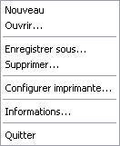

Le lancement s'effectue en cliquant sur l'icône Hydrouti du bureau ou en sélectionnant l'item Hydrouti dans le menu Hydrouti créé dans le menu Programme lors de l'installation.
Il peut être également réalisé par le lancement direct, à partir de l'explorateur, du programme Hydrouti.exe situé dans le répertoire d'installation de Hydrouti.
Le lancement de Hydrouti est effectué également automatiquement lors d'un double-clic sur un fichier *.HYD contenant l'étude.
Après le lancement de Hydrouti, il faut ouvrir une étude par l'intermédiaire de son fichier HYD grâce au menu Etude / Ouvrir. Les menus suivants apparaissent :
Comme pour toute application Windows, les commandes sont accessibles par les menus déroulants à l'aide de la souris ou directement par combinaison de touches ALT + la "lettre soulignée" du menu.
![[Astuce]](chmicons/tip.png) | Exemple |
|---|---|
ALT E puis O pour ouvrir une étude |
A part le menu Etude, tous les autres permettent d'accéder au module de calcul choisi. Le menu Etude / Informations permet de saisir des informations textuelles qui apparaîtront dans les entêtes des impressions de Hydrouti.

Tous les modules de Hydrouti possèdent le même menu déroulant intitulé par le nom du module et permettant d'ouvrir, d'enregistrer, d'imprimer l'élément calculé par le module, par exemple un bassin versant ou une chute, ou de sortir du module.
Tous ces éléments sont sauvegardés dans le fichier d'extension HYD de l'étude en cours.
Une fois qu'un module a été choisi, une fenêtre apparaît à coté de la fenêtre verticale contenant l'aide explicative du module en cours d'utilisation, permettant la saisie des données et la visualisation des résultats de calculs et des différentes courbes et graphiques.
Dans chaque module, une option imprimer est disponible dans le menu.
Cette option permet l'impression d'une fiche résultat :
par impression directe de la visulisation de la fiche,
par enregistrement de cette fiche dans un fichier d'extension ".odt" au format OpenOffice (la présence d'OpenOffice sur le poste n'est pas nécessaire),
soit enregistrement de cette fiche dans un fichier d'extension ".doc" au format Microsoft Word (si ce logiciel est présent sur le poste de travail).

Pour chaque module, une fiche de présentation des résultats est prédéfinie. Il est cependant possible de modifier le nom du service ou de l'entreprise, qui apparaît dans l'en-tête des fiches. Pour cela, il faut cliquer sur l'option Informations dans le menu Étude du module général d'Hydrouti, et saisir les données souhaitées.